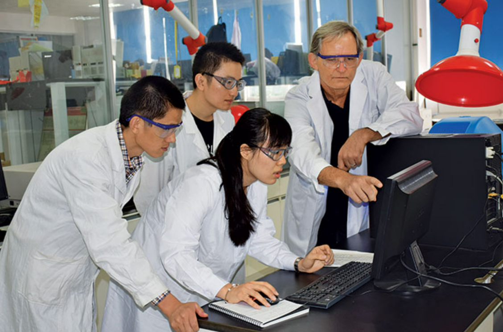
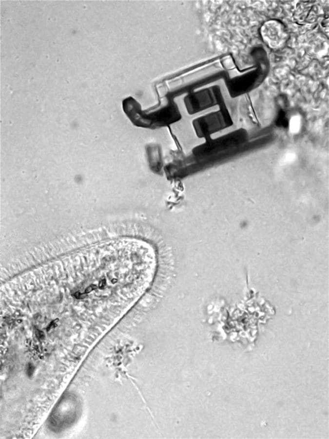
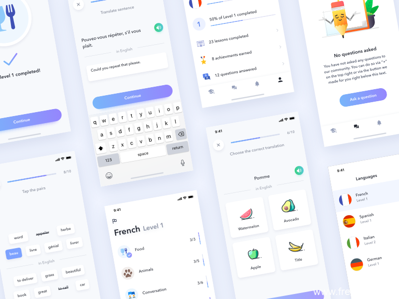

Semiconductor micro-robot
Our group has been investigating the possibility of realizing a silicon-based life form based on this special asymmetric pumping system.
In this article, we report a tunable and effective ACEO micropump which was fabricated with traditional lithography techniques on a glass substrate.
Also, we predicted the motion of the microrobot on the surface of a 0.01M KCl solution (Potassium Chloride solution) by simulation with COMSOL Multiphysics.
Finally, we experimentally observed that the microrobot could be pushed by the ACEO pump in the KCl solution.
